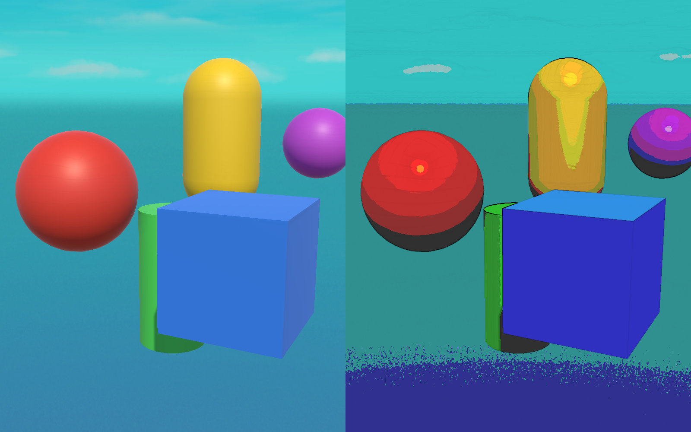

🎨 Lesson 5.5: Mini-Project — A Custom Post-Process Renderer Feature
Time to combine the module. You'll build a complete comic-book post-process — Sobel edge detection for ink outlines plus colour posterization — as a full-screen HLSL shader (Lesson 5.2) delivered by a RenderGraph Scriptable Renderer Feature (Lesson 5.3), injected at the right point in the frame (Lesson 5.1). It ends in a real before/after render of the effect running in Unity 6.
🎯 What You'll Build
- A full-screen blit shader that inks edges and posterizes colour
- A Scriptable Renderer Feature + RenderGraph pass that applies it before post-processing
- Inspector settings — edge strength and colour levels — that tune the look live
- The finished effect running over a real scene
Estimated Time: 90 minutes · Prerequisite: Lessons 5.1–5.4 (all of Module 5)
In This Lesson
The Goal
Here's the finished effect — a real Unity 6 capture, the same scene with the feature off (left) and on (right):

ComicPost effect, rendered live in Unity 6. Left — the scene as normally rendered. Right — the full-screen pass applied: colours posterized into flat bands and a Sobel edge pass inking the silhouettes. Both are genuine captures; the right is the fully-rendered frame after the effect's full-screen blit.Everything you need you've already met: a fragment shader that samples the screen (5.2), the feature/pass plumbing with RecordRenderGraph and AddBlitPass (5.3), and the injection point (5.1). We're assembling them into one polished, tweakable effect.
Step 1: The Full-Screen Shader
A full-screen post shader is different from the object shader in Lesson 5.2: it doesn't transform a mesh, it covers the whole screen and samples the already-rendered image. URP gives you the boilerplate through Blit.hlsl — it provides the fullscreen Vert, the Varyings (with .texcoord), and the source texture _BlitTexture. Create it as Create ▸ Shader ▸ Unlit and replace the contents:
Shader "Custom/ComicPost"
{
SubShader
{
Tags { "RenderPipeline"="UniversalPipeline" }
ZWrite Off Cull Off
Pass
{
Name "ComicPost"
HLSLPROGRAM
#pragma vertex Vert // fullscreen triangle, from Blit.hlsl
#pragma fragment frag
#include "Packages/com.unity.render-pipelines.core/ShaderLibrary/Blit.hlsl"
float _EdgeStrength;
float _Levels;
float Lum(float3 c) { return dot(c, float3(0.299, 0.587, 0.114)); }
float SampleLum(float2 uv)
{
return Lum(SAMPLE_TEXTURE2D(_BlitTexture, sampler_LinearClamp, uv).rgb);
}
half4 frag (Varyings IN) : SV_Target
{
float2 uv = IN.texcoord;
float2 t = _BlitTexture_TexelSize.xy;
// Sobel edge detection on luminance (3×3 neighbourhood).
float tl=SampleLum(uv+t*float2(-1, 1)), tm=SampleLum(uv+t*float2(0, 1)), tr=SampleLum(uv+t*float2(1, 1));
float ml=SampleLum(uv+t*float2(-1, 0)), mr=SampleLum(uv+t*float2(1, 0));
float bl=SampleLum(uv+t*float2(-1,-1)), bm=SampleLum(uv+t*float2(0,-1)), br=SampleLum(uv+t*float2(1,-1));
float gx = -tl - 2*ml - bl + tr + 2*mr + br;
float gy = tl + 2*tm + tr - bl - 2*bm - br;
float edge = saturate(sqrt(gx*gx + gy*gy) * _EdgeStrength);
// Posterize the colour into flat bands, then ink the edges.
float3 col = SAMPLE_TEXTURE2D(_BlitTexture, sampler_LinearClamp, uv).rgb;
col = floor(col * _Levels) / _Levels;
col *= (1.0 - edge);
return half4(col, 1.0);
}
ENDHLSL
}
}
}_BlitTexture is the source (the current camera colour), sampler_LinearClamp is a ready-made sampler, and _BlitTexture_TexelSize.xy gives the one-pixel step for neighbour sampling. The Sobel kernel measures the local luminance gradient — big where colours change sharply (an edge), near zero on flat areas — and we multiply the posterized colour down to black there.
Step 2: The Renderer Feature
The feature carries the tweakable settings, builds the pass, and pushes the settings into the material each frame. Same skeleton as Lesson 5.3, now with a serialized Settings block:
using System;
using UnityEngine;
using UnityEngine.Rendering.Universal;
public class ComicPostFeature : ScriptableRendererFeature
{
[Serializable]
public class Settings
{
public Shader shader;
[Range(0f, 4f)] public float edgeStrength = 1.4f;
[Range(2f, 16f)] public float levels = 4f;
}
public Settings settings = new Settings();
Material material;
ComicPostPass pass;
public override void Create()
{
if (settings.shader == null) return;
material = new Material(settings.shader);
pass = new ComicPostPass(material)
{
renderPassEvent = RenderPassEvent.BeforeRenderingPostProcessing
};
}
public override void AddRenderPasses(ScriptableRenderer renderer,
ref RenderingData renderingData)
{
if (pass == null) return;
if (renderingData.cameraData.cameraType != CameraType.Game) return;
// push live settings into the material
material.SetFloat("_EdgeStrength", settings.edgeStrength);
material.SetFloat("_Levels", settings.levels);
renderer.EnqueuePass(pass);
}
protected override void Dispose(bool disposing)
{
if (Application.isPlaying) Destroy(material);
else DestroyImmediate(material);
}
}Step 3: The RenderGraph Pass
The pass is the Lesson 5.3 pattern verbatim — grab the camera colour, blit it through the material into a fresh texture, swap that back in:
using UnityEngine;
using UnityEngine.Rendering;
using UnityEngine.Rendering.RenderGraphModule;
using UnityEngine.Rendering.RenderGraphModule.Util;
using UnityEngine.Rendering.Universal;
public class ComicPostPass : ScriptableRenderPass
{
const string k_PassName = "ComicPostPass";
Material material;
public ComicPostPass(Material material) { this.material = material; }
public override void RecordRenderGraph(RenderGraph renderGraph,
ContextContainer frameData)
{
var resourceData = frameData.Get<UniversalResourceData>();
if (resourceData.isActiveTargetBackBuffer) return;
TextureHandle source = resourceData.activeColorTexture;
var desc = source.GetDescriptor(renderGraph);
desc.name = "_ComicPostTemp";
desc.depthBufferBits = 0;
TextureHandle destination = renderGraph.CreateTexture(desc);
if (!source.IsValid() || !destination.IsValid()) return;
var blit = new RenderGraphUtils.BlitMaterialParameters(source, destination, material, 0);
renderGraph.AddBlitPass(blit, k_PassName);
resourceData.cameraColor = destination;
}
}Because the effect is a single full-screen pass, one blit is all it takes; the ping-pong to a fresh destination avoids reading and writing the same texture at once (Lesson 5.3's data-flow point).
Step 4: Wire It Up
- Select your Universal Renderer Data asset (from the URP asset's Renderer list).
- Click Add Renderer Feature ▸ Comic Post Feature.
- Assign the ComicPost shader to the feature's Shader field.
- Enter Play — the game view turns into the comic look; the Scene view stays normal (we filtered to
CameraType.Game). - Drag Edge Strength and Levels in the feature Inspector and watch the outlines thicken and the colour banding coarsen in real time.
⚠️ Full-screen shader gotchas
Use #pragma vertex Vert from Blit.hlsl — don't write your own vertex function for a full-screen pass. Sample _BlitTexture (not _MainTex), and read the pixel step from _BlitTexture_TexelSize. Getting the source-texture name wrong is the most common "my post effect is black" bug.
Tuning & Extending
- Edge on depth/normals. Colour-based Sobel misses edges between similar colours. Sample the camera depth or normals texture instead for cleaner, geometry-accurate outlines (request them via the feature's inputs).
- Coloured ink. Instead of multiplying to black,
lerptoward an ink colour so outlines can be blue or sepia. - Volume control. Drive
edgeStrength/levelsfrom a customVolumeComponentso the look blends per-area like built-in post effects. - Combine effects. Add a vignette or a paper-grain texture in the same fragment shader for a fuller comic style.
✅ What you built — the whole module
You wrote HLSL that samples the screen (5.2), packaged it in a RenderGraph Renderer Feature at the right injection point (5.1, 5.3), and made it tweakable — a complete, shippable custom post effect. Compute (5.4) would be the tool if this needed a heavy multi-pass blur or simulation feeding in. You now own the full URP rendering-extension pipeline.
Quick Quiz
Question 1: For a full-screen post shader, which vertex function should you use?
Question 2: Which texture does the fragment shader sample to read the rendered scene?
Question 3: Why inject the feature at BeforeRenderingPostProcessing rather than AfterRenderingOpaques?
Summary
🎉 Key Takeaways
- A full-screen post shader uses
Blit.hlsl'sVertand samples_BlitTexture— never a hand-written vertex or_MainTex. - Sobel on luminance finds edges; posterize (
floor(col*levels)/levels) flattens colour into bands — together, a comic look. - The feature holds serialized settings and pushes them into the material each frame; the pass blits through it via
RecordRenderGraph/AddBlitPass. - Inject at
BeforeRenderingPostProcessingso the effect sees the full scene; filter toCameraType.Game. - Extend with depth/normal edges, coloured ink, and
VolumeComponentcontrol — the same pattern scales to any full-screen effect.
🚀 What's Next?
That completes the Rendering pillar. Next we change gears entirely — from one machine's pixels to many machines talking to each other. Module 6: Multiplayer — Netcode for GameObjects begins with Lesson 6.1: Networking Foundations — Client/Server & Topologies.
🎨 A look of your own
Shader, feature, pass, injection point — you assembled all four into a real post effect. Every custom look your game ships will follow this exact shape.